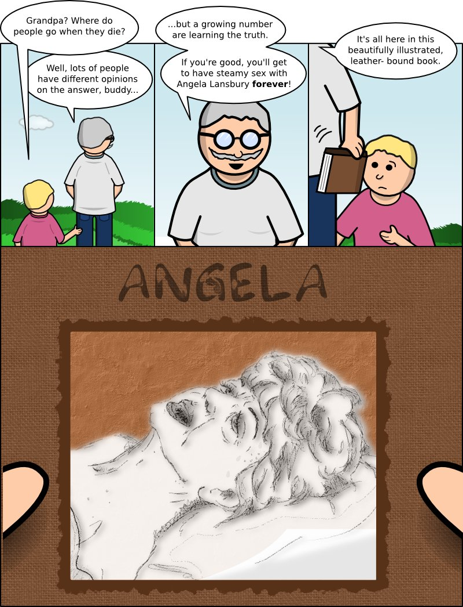

Nerd Theater
Archives
About
Science, Farts, and Whimsey
Angela
August 16, 2010

Fuck you, she's a British legend!
Mike
: A big thanks to our very special guest artist Jette!
Anonymous Asshole
: That shadow under his collar makes it look like he has a spoon chest
Mike
: Fixed the spoon chest. I should mention that Jette just drew Angela; the awful art around it is mine :)
Anonymous Asshole
: Is that really a smiley face at the end of that sentence?
Mike
: You bet your swollen anonymous ass it is.
Anonymous Asshole
: Not every guy has a swollen ass. Just ones who take it in the pooper.
Epipen
: Like putting lipstick on a pig...
Emmet
: You gave them NOSES!!!!!!
Anonymous Asshole
: Epipen? Isn't that the viagra shot you use.
rrittenhouse
: LMAO nice. Will be reading regularly!
DancinPete
: WTF? link, preeze. Who the F is Angela Lansbury?
Mike
: You're kidding, right? Murder She Wrote? SWEENEY F-KING TODD!!!!!
Anonymous Asshole
: the stage version mind you,...also bedknobs and broomsticks
DancinPete
: Why does gramps have tits? It takes extra effort to draw tits, so there must be a reason!
Anonymous Asshole
: Ever noticed how old men have titties? Also, everything in Mike's world has tits, including tits.
Anonymous Asshole
: Of course Mike brings it back to Broadway. Could you BE more gay Mike?
Mike
: I guess I could spend my weekends drawing naked men and tell my wife it's for a web comic...
DancinPete
: It's an improvement from your animal porn fetish. Baby steps, Mikey. Baby steps.
← Previous comic
Next comic →
Anonymous Asshole: That shadow under his collar makes it look like he has a spoon chest
Mike: Fixed the spoon chest. I should mention that Jette just drew Angela; the awful art around it is mine :)
Anonymous Asshole: Is that really a smiley face at the end of that sentence?
Mike: You bet your swollen anonymous ass it is.
Anonymous Asshole: Not every guy has a swollen ass. Just ones who take it in the pooper.
Epipen: Like putting lipstick on a pig...
Emmet: You gave them NOSES!!!!!!
Anonymous Asshole: Epipen? Isn't that the viagra shot you use.
rrittenhouse: LMAO nice. Will be reading regularly!
DancinPete: WTF? link, preeze. Who the F is Angela Lansbury?
Mike: You're kidding, right? Murder She Wrote? SWEENEY F-KING TODD!!!!!
Anonymous Asshole: the stage version mind you,...also bedknobs and broomsticks
DancinPete: Why does gramps have tits? It takes extra effort to draw tits, so there must be a reason!
Anonymous Asshole: Ever noticed how old men have titties? Also, everything in Mike's world has tits, including tits.
Anonymous Asshole: Of course Mike brings it back to Broadway. Could you BE more gay Mike?
Mike: I guess I could spend my weekends drawing naked men and tell my wife it's for a web comic...
DancinPete: It's an improvement from your animal porn fetish. Baby steps, Mikey. Baby steps.